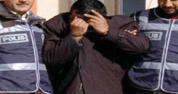

Olay yeri inceleme ekibi haricinde, görevlilerin olay yerine girmek zorunda kalmaları durumunda, kimlerin olay yerinde bulunduğu olay yeri inceleme ekibine bildirilmelidir.
Kimlik ve eşgal tespiti,
olay yerine giden ilk ekip
tarafından yapılmalı, verilen
eşgal bilgileri doğrultusunda
diğer
ekipler
çevrede
araştırmaya yoğunlaşmalıdır.
Diğer
suçların
soruşturmasında olduğu gibi bu suçlarda da olay yerinin muhafazası çok önemlidir. En önemli maddi bulguları, olay yerinden toplanan veya şahıslardan elde edilen veya DNA kaynağı olabilecek biyolojik bulgular (vücut sıvıları, vücut artıkları, kıl, tüy vb.) oluşturmaktadır.
Polisin Adli Görevlerinin Yerine Getirilmesinde Delillerin
Toplanması, Muhafazası ve İlgili Yerlere Gönderilmesi
Hakkında Yönetmelik’in 14’üncü maddesinde ifade edildiği
gibi; “Delillerin muhafazası, suç sayılan olayın meydana geldiği andan itibaren başlar. Olay yerinin açık veya kapalı saha oluşu, hava durumu, delillerin kimyasal ve fiziksel özellikleri göz önünde bulundurularak gerekli koruyucu tedbirler alınır.
Olay yerinde kalması zaruri görülen deliller, soruşturma veya inceleme sonuçlanıncaya kadar görevlendirilecek nöbetçilerle korunur. Diğer deliller, ilgili yerlere gönderilmek üzere soruşturmayı yapan emniyet biriminde, kilitli ve mahsus odalarında veya çelik dolaplarda muhafaza edilir. İlgililerden başkasının herhangi bir sebeple bu yerlere girmelerine veya dolapları açmalarına müsaade edilmez. Polis laboratuvarlarına gönderilen delillerin muhafazası, laboratuvar görevlilerince sağlanır.”
